Otto 21 表情 · 挑选要植入 MyIsle 的.
来源项目 joelbaby/esp32-oled-animated-faces（MIT，表情素材源自 Otto Emoji GIF Component · txp666，128×48 单色、80ms/帧）。
下面按原项目顺序列出全部 21 种表情，点卡片勾选你希望搬进 MyIsle 待机表情的。勾完把底部清单发我即可。

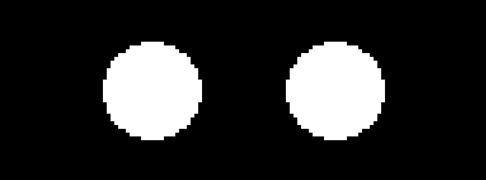
平静neutral
两个圆眼，呆萌平视
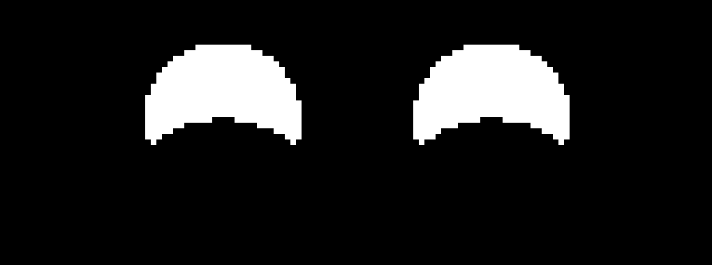
开心happy
眼睛弯成上弧 ^^
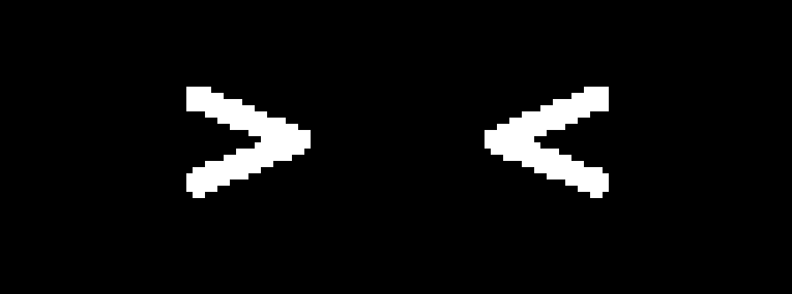
大笑laughing
笑到眯成 ><
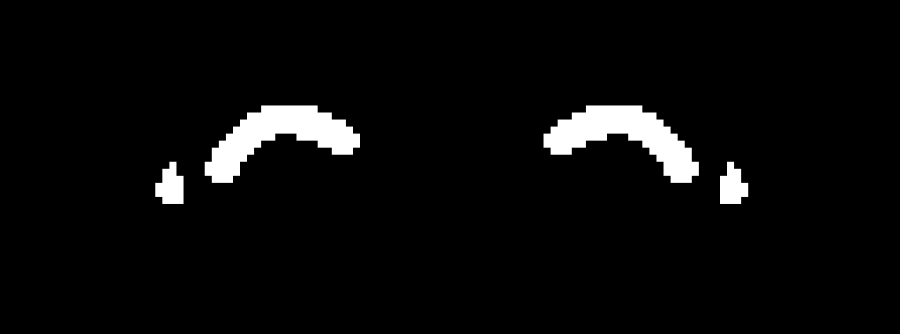
搞笑funny
眉毛一挑，滑稽
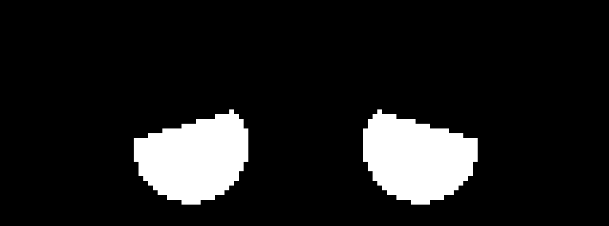
难过sad
眼睛下垂成半圆
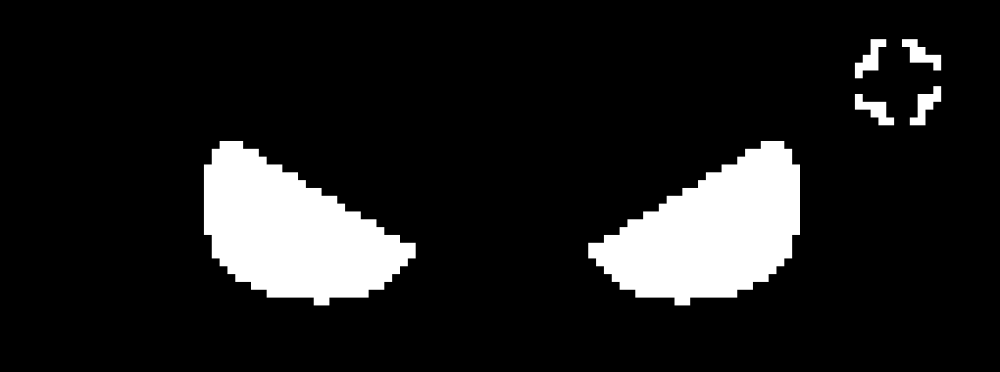
生气angry
斜眼怒视 + 怒气符号
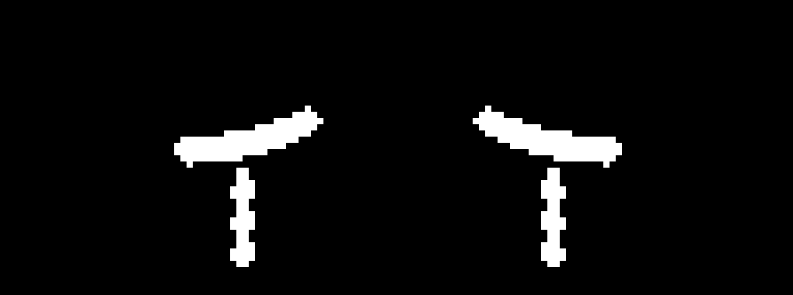
哭泣crying
眼泪流下
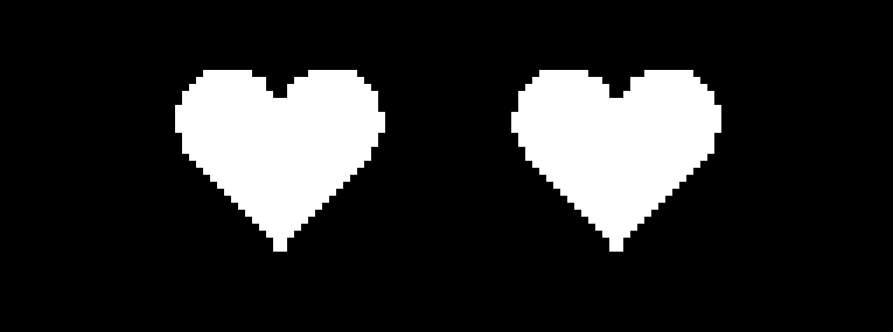
爱心眼loving
眼睛变成两颗心
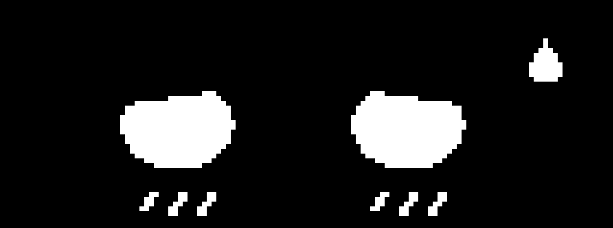
害羞embarrassed
脸红 + 汗滴
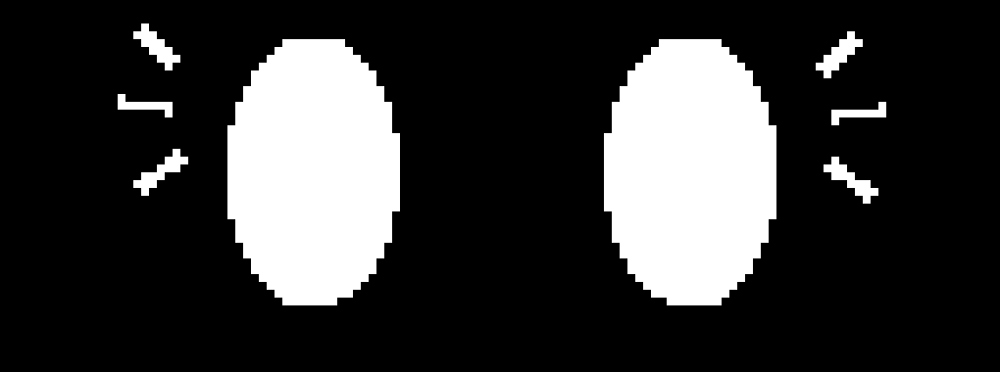
惊讶surprised
瞪大椭圆眼 + 惊叹线
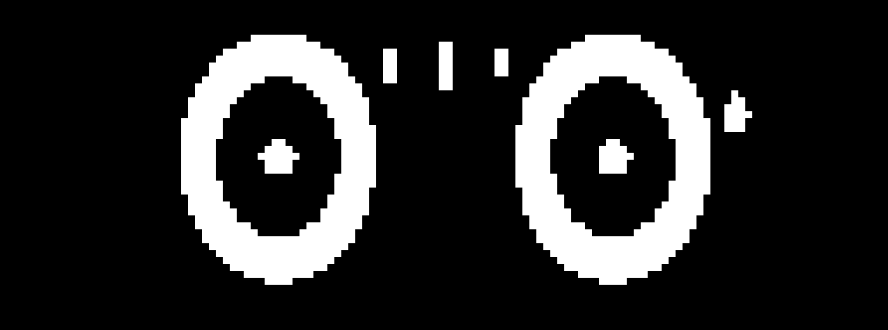
震惊shocked
大圆眼 + 高光
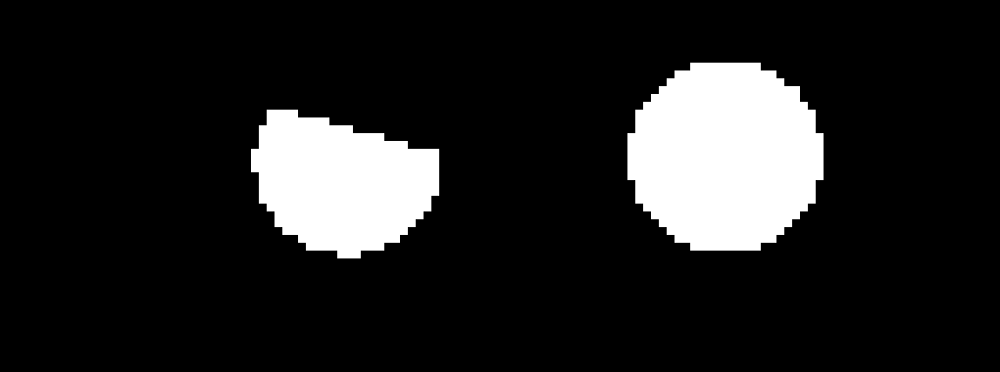
思考thinking
一眼大一眼小，若有所思
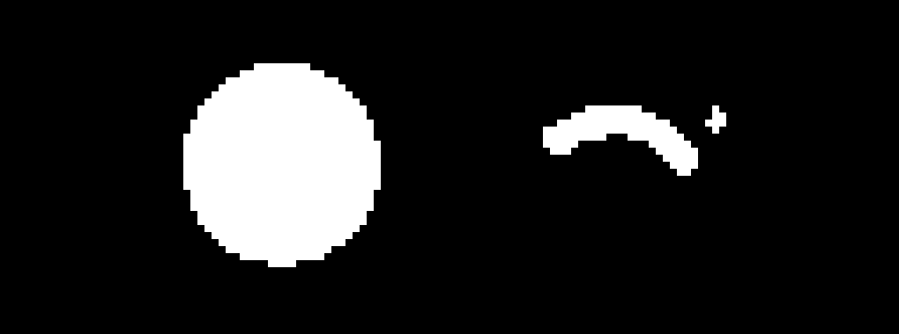
眨眼winking
单眼闭上眨一下
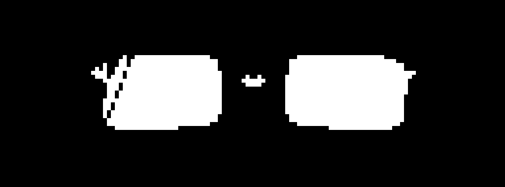
酷cool
戴上墨镜
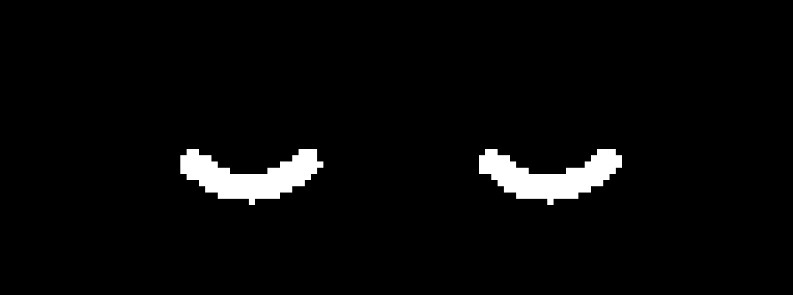
放松relaxed
弯弯的眯眯眼
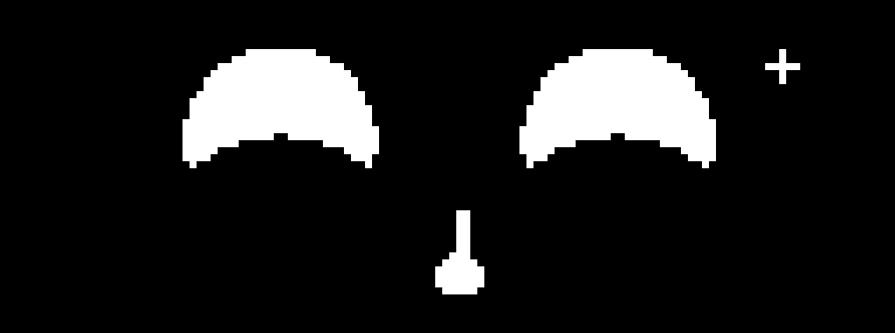
馋/好吃delicious
笑眼 + 舔嘴角
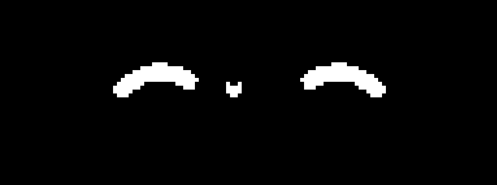
亲亲kissy
星星眼 / 飞吻
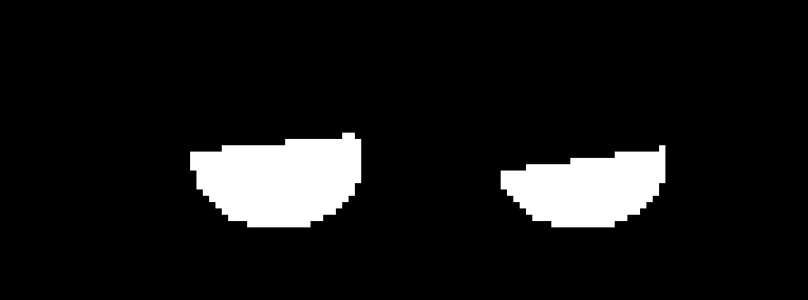
自信confident
半眯自信眼
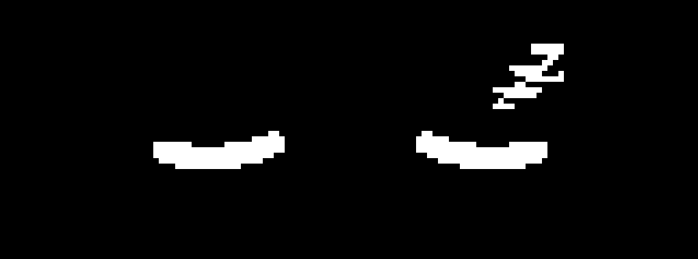
困倦sleepy
闭眼 + Zzz
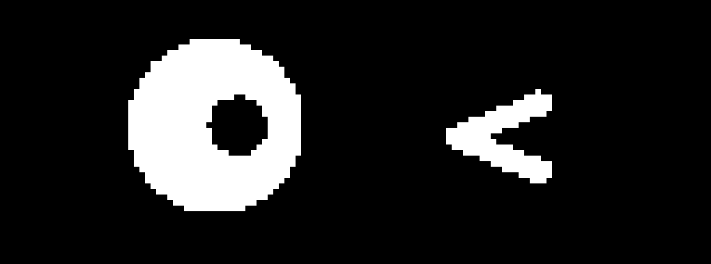
搞怪silly
大小眼 + 吐舌
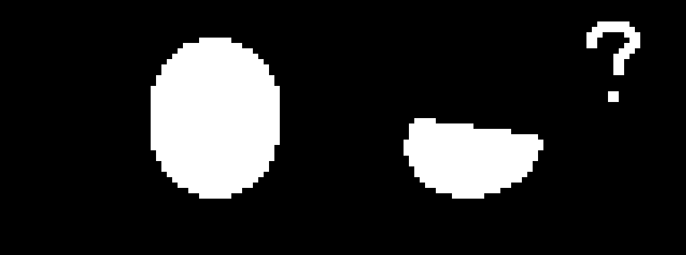
困惑confused
大小眼 + 问号
建议：MyIsle 收起态很小（≈92×30），表情宜“少而准”。我推荐优先：平静、开心、眨眼、困倦、惊讶、搞怪、亲亲 / 爱心 这类轮廓简单、迷你尺寸也认得出的；哭泣 / 害羞 / 好吃 / 思考 这类靠符号（泪 / 汗 / 舌）表达的适合放进展开态或更大的圆盘里。你勾完想要的，我再按同样的画法（圆角矩形眼 + 弧线嘴）做成可选表情集。
Otto 表情 © txp666（Otto Emoji GIF Component）· 移植 © joelbaby · MIT License